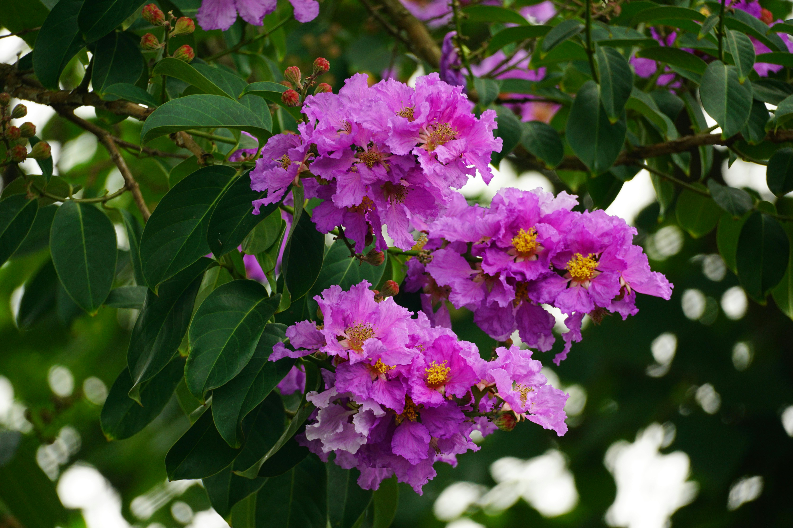

Crepe Myrtle
LagerstroemiaCrepe Myrtles have smooth trunks, paper-thin bark, and vibrant flowers. Their crinkled blooms, resembling crepe paper, range from white to purple to red.
These hardy trees thrive in diverse soils, preferring full sun and moist soil for the best growth.
